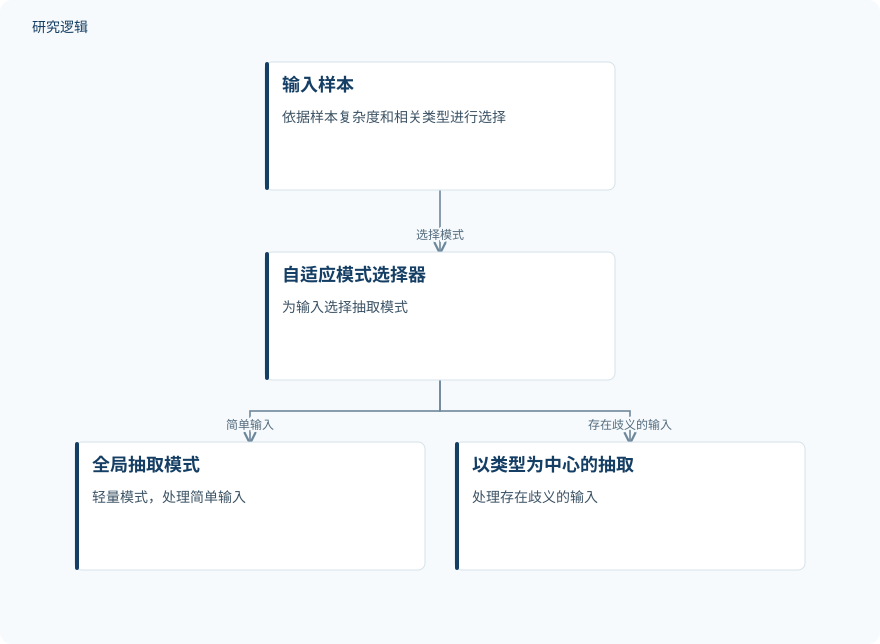

摘要解读
SMADE-IE：面向零样本信息抽取的证据驱动辩论稀疏多智能体框架
SMADE-IE: Sparse Multi-Agent Framework with Evidence-Driven Debate for Zero-Shot Information Extraction
解读更新 2026-11-27 19:34 · 依据公开摘要整理，未核验全文细节
零样本信息抽取需要在适应新领域的同时兼顾准确性与推理开销。SMADE-IE 尝试按输入复杂度选择抽取模式，并用证据驱动辩论处理跨类型冲突。
文章目录
抽取得越细，冲突与开销也可能增加
大语言模型支持在不进行任务专门训练的情况下，将信息抽取适配到新的模式和领域。但如何组织提示与协作，会影响抽取质量和资源消耗。
摘要指出，整体提示虽然高效，却容易遗漏实体提及、出现边界错误或混淆类型；逐类型提示更聚焦，但不同类型的预测可能重叠或冲突。多智能体辩论有助于解决冲突，却可能引入无关上下文、冗余交互和较高的 token 开销。
按复杂度选择模式，用证据处理冲突
SMADE-IE 是一个稀疏、证据驱动的多智能体框架。其自适应模式选择器依据样本复杂度和相关类型，将简单输入交给轻量的全局抽取模式，将存在歧义的输入交给以类型为中心的抽取模式。
针对跨类型冲突，框架使用证据驱动辩论模块，结合图尔敏式论证、外部证据评分、基于 Beta 的置信度更新和提前停止。摘要没有展开这些环节的具体实现。
依据摘要整理的自适应抽取模式


仅概括摘要明确陈述的模式选择关系，不限定辩论模块与某一种抽取模式的连接。
下载 SVG图示关系说明
实线表示相邻阶段的信息流，虚线表示跨阶段联系或反馈。
输入样本 → 自适应模式选择器：选择模式；自适应模式选择器 → 全局抽取模式：简单输入；自适应模式选择器 → 以类型为中心的抽取：存在歧义的输入
三个任务类别的抽取表现与 token 消耗
摘要报告，在涵盖命名实体识别（NER）、关系抽取（RE）和联合实体关系抽取（JERE）的九个基准上，相比最强基线，SMADE-IE 的平均 Partial F1 分别提高 11.37、3.83 和 14.46 个点。
推理效率方面，与多智能体基线 CrossAgentIE 相比，SMADE-IE 在 DocRED 和 CrossRE 上的 token 消耗分别降低 85.1% 和 80.1%。这些结果对应摘要报告的比较范围，不宜直接外推到所有任务或数据集。
摘要尚不足以判断哪些细节
摘要未说明各基准的样本规模、数据构成、最强基线的具体身份及各项结果的波动，因此仅凭摘要无法判断比较覆盖范围和结果稳定性。
摘要也未交代模式选择、证据评分和提前停止各自对结果的贡献，或框架在其他领域的验证范围；这些是当前资料无法判断的问题，并不意味着论文没有开展相关分析。
阅读启发：关注路由与证据的作用
阅读启发：这项工作提示，评估大模型多智能体抽取时，可以同时关注抽取表现、冲突处理和 token 消耗。进一步阅读时，可留意复杂度如何判定、外部证据如何参与评分，以及不同抽取模式下的结果如何比较。
以上为本站阅读启发与建议，不是论文已验证的结论。